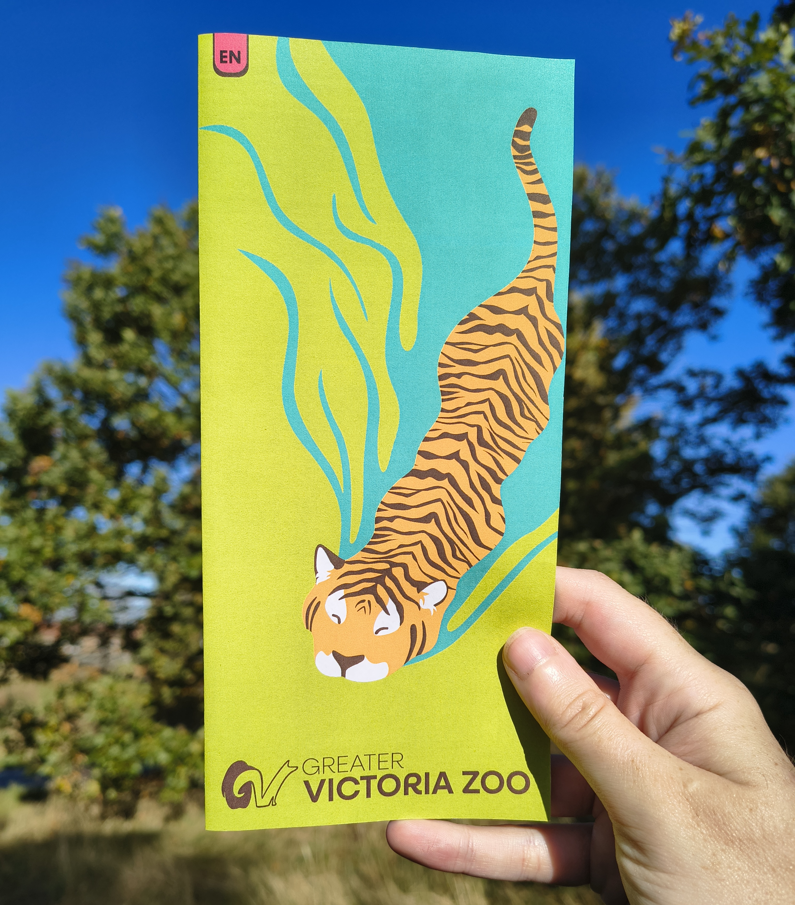
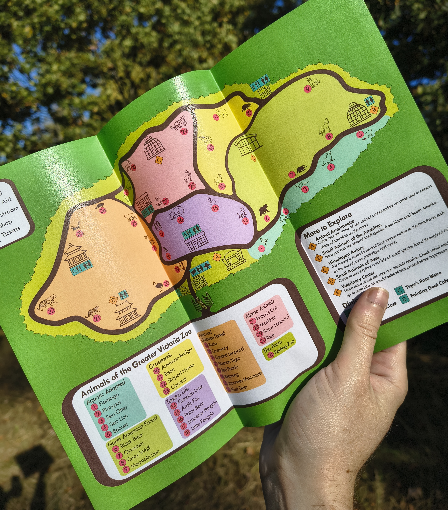

Greater Victoria Zoo
This project was particularly fun for me as I love zoos and have visited over two dozen across different countries. So in designing for this zoo I used that firsthand experience to ensure purposeful, thoughtful decisions in my design process.
To appeal to young audiences, the branding makes heavy use of fun, bright colors as well as a simplified illustrations that can be used on signage throughout the zoo. While in a social media marketing campaign and other uses the use of animal photographs is styled to focus wholly on the animals, and still makes vibrant use of the brand's bold colors.



Method
Pictograms for each animal, as well as the cover and map base were created in Illustrator before using InDesign to ensure the remaining informational content was well organized. Animal photographs were edited in Photoshop to isolate them from the background for use in the social media campaign. This project was created entirely with human creativity and skill, without the use of AI.
Logo and Colors
Using a similar style as the other animal pictograms, I developed a layout combining a penguin and an arctic fox to resemble the letters G and V to match the zoo's name. The brand makes use of several official colors, with the primary colors being a vivid green and rich brown that invoke ideas of nature while staying fun.




Final Thoughts
It was especially important to me to make the map design as accessible as possible, particularly keeping young children in mind. To that end, pictograms were combined with text labels to add an extra layer of guidance for those not yet reading. Color-coding was combined with shape-based icons to further clarify information while staying accessible to those with colorblindness.